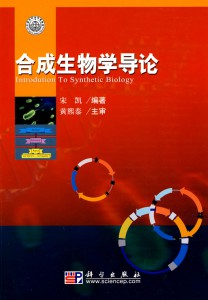

简历English

Email: ksong@tju.edu.cn
Lab:
研究领域：
-
统计过程控制，生物信息学，合成生物学（学术著作：《合成生物学导论》）

学习经历：
-
1998年7月获浙江大学控制科学与工程专业学士学位
-
2005年6月获浙江大学控制科学与工程专业博士学位（硕博连读）
工作经历：
-
2007.06 - 天津大学化工学院过程装备与控制工程系，副教授
-
2013.01 - 2015.10 美国西南医学中心临床科学系，访问副教授
-
2005.06 - 2007.06 天津大学化工学院过程装备与控制工程系，讲师
科研项目经历：
-
2013.01 - 2016.12: 细菌基因组调控基元和必需基因的识别与分析, 国家自然科学基金面上基金项目, 项目负责人
-
2011.07 - 2016.06: Molecular biomarker identification of non small cell lung cancers (NSCLCs), CPRIT Multi-Investigator Award (MIRA), 主要参与人
-
2011.01 - 2013: 合成基因线路非线性动力学的研究与应用，国家自然科学基金青年基金项目, 项目负责人
-
2009.03 - 2011.03: 橡胶门尼粘度在线测量关键技术研究，国家863计划，主要参与人
-
2008.01 - 2011.12: 控制理论在基因线路研究中的应用，高校博士点基金项目，项目负责人
-
2008.01 - 2011.12: “环境因素与细胞相互作用的系统定量分析与过程强化”，国家自然科学基金重点项目，参与
所获奖励：
-
国家级教学成果奖二等奖：生物工程与生物技术创新人才与实践能力的培养，排名第六
-
"the 2008 International Genetically Engineered Machine Competition (iGEM)", Bronze Medal, Nov. 2008, United States of America, M.I.T. (Supervisor of Tianjin University team)
-
"the 2007 International Genetically Engineered Machine Competition (iGEM)", Gold Medal, Nov. 2007, United States of America, M.I.T. (Supervisor of Tianjin University team)
学术著作：
-
著作:
宋凯, 《合成生物学导论》, 科学出版社, 2010, 02, 中国，北京
论文：
生物信息学
-
1) Yu-an Zhang,…,Kai Song,…, Adi Gazdar: Validation of SCT Methylation as a Hallmark Biomarker for Lung Cancers, Journal of Thoracic Oncology, 2016, 11(3) : 346-360
-
2) *Kai Song, Fei Zhang, et al: Copy number variations distinguish lung adenocarcinomas from squamous cell carcinomas, Genomics, under review.
-
3) Chunying Zhang, Luc Girard, Amit Das, Sun Chen, Guangqiang Zheng, and *Kai Song: Nonlinear Quantitative Radiation Sensitivity Prediction Model Based on NCI-60 Cancer Cell Lines, The Scientific World Journal, Volume 2014 (2014), Article ID 903602
-
4) *Kai Song Tuopeng Tong Fang Wu: Predicting essential genes in prokaryotic genomes using a linear method: ZUPLS. Integr. Biol., 2014, 6(4):460-9, DOI:10.1039/C3IB40241J.
-
5) Sun Chen, Chun-ying Zhang and *Kai Song: Recognizing short coding sequences of prokaryotic genome using a novel iteratively adaptive sparse partial least squares algorithm, Biology Direct 2013, 8:23 doi:10.1186/1745-6150-8-23
-
6) *Kai Song：Recognition of prokaryotic promoters based on a novel variable-window Z-curve method, Nucleic Acids Research, 2012, 40(3): 963-971
-
7) *Kai Song, Ze Zhang, Tuo-peng Tong, Fang Wu: Classifier assessment and feature selection for recognizing short coding sequences of human genes, Journal of Computational Biology, 2012,19(3): 251-260
-
8) *Kai Song, Xia Li, Yingjin Yuan: OSC-KPCA based metabolomics pattern analysis for Arabidopsis thaliana genotype discrimination, Journal of Chemical Industry and Engineering (in Chinese), 2007, 58(9): 2341-2346
-
9) Zhu Yajuan, Song Kai,Li Ping,Wang Hui : Feedback Control of the Genetic Networks with Time Delay，Proceedings of Fifth World Congress on Intelligent Control and Automation, Hangzhou, China, 2004, 5549-5553.
-
10) 王世祥; 张飞; 王玲; *宋凯, 肺腺癌吸烟相关甲基化模式识别分类模型及特征基因的识别研究, 中国生物医学工程学报, Issue 03, pp 301-309, 20/6/2016.
-
11) 张飞; 王世祥; 王玲; *宋凯, Pattern recognition of the lung squamous cell carcinoma tumor progression classification model and signature genes identification, 生物化学与生物物理进展, 43(1), pp 63-74, 21/1/2016.
-
12) 郑广强; *宋凯, Genome-wide signature genes identification for morphologic subclassification of non-small cell lung cancer and survival analysis of patients, 基因组学与应用生物学, 10(34), 2015 1/10/2015.
统计过程控制
-
13) Ze Zhang, Kai Song, Tuo-peng Tong, Fang Wu: A novel nonlinear adaptive Mooney-viscosity model based on DRPLS-GP algorithm for rubber mixing process, Chemometrics and Intelligent Laboratory Systems, 2012, 112: 17-23
-
14) Kai Song, Fang Wu, Tuo-peng Tong and Xiao-jing Wang: A real-time Mooney-viscosity prediction model of the mixed rubber based on the Independent Component Regression-Gaussian Process Algorithm, Journal of Chemometrics, 2012, DOI: 10.1002/cem.2478.
-
15) Kai Song, Tuo-peng Tong, Ze Zhang, Fang Wu: A novel partial least squares weighting gaussian process algorithm and its application in near infrared spectroscopy data mining problems. Analytical Methods, 2012, 4 (5), 1395-1400
-
16) Kai Song, Haiqing Wang, Ping Li, Zhigang Feng: Quality Based Prioritized Sensor Fault Monitoring Methodology, Chinese Journal of Chemical Engineering, 2008, 16(4): 1-7
-
17) Kai Song, Haiqing Wang, Ping Li: Discounted-measurement RPLS Algorithm and its Application to Quality Control of the Rubber Mixing Process, Journal of Chemical Industry and Engineering, 6, 942-946 (2004), (in Chinese)
-
18) Kai Song, Haiqing Wang, Ping Li: VPLS based quality and cost control for Tennessee Eastman process, Chinese Journal of Chemical Engineering, 2005, 1: 61-66，
-
19) Kai Song, Haiqing Wang, Ping Li: Quality monitoring of the rubber mixing process by using the discounted-measurement RPLS algorithm, Proceedings of 2003 IEEE International Conference on Systems, Man & Cybernetics, Washington, D.C., U.S.A., 2003, 2348-2353，
-
20) Kai Song, Haiqing Wang, Ping Li: GMPLS based Intelligent Quality Control for Internal Rubber Mixing Process, Proceedings of Fifth World Congress on Intelligent Control and Automation, Hangzhou, China, 2004, 3295-3298.
Kai Song, Haiqing Wang, Ping Li: NN-PLS based On-line Component Soft-analyzer for Tennessee Eastman Process, Proceedings of Fifth World Congress on Intelligent Control and Automation, Hangzhou, China, 2004, 3653-3655